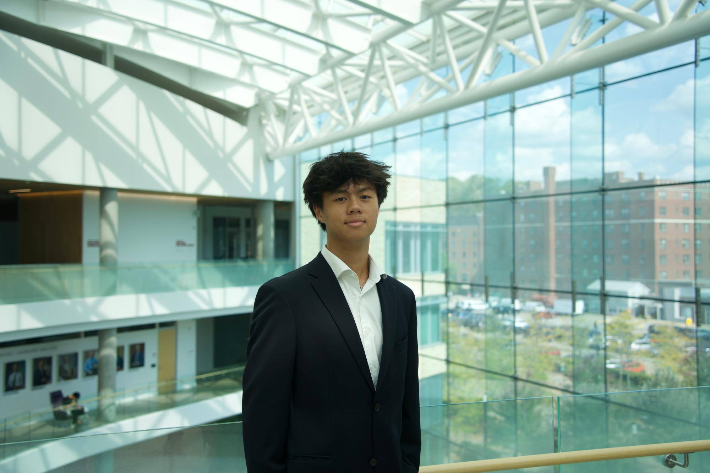

lóng · noun
In China, very rarely do you meet someone with the last name Long 龙. Pronounced “long”, it means dragon, and unlike Western culture where dragons are often associated with destruction and evil, in China it represents strength, nobility, and deep cultural pride.

Hi there, my name is Yicheng, and I’m currently a sophomore at Carnegie Mellon University studying Business Administration with an additional major in Statistics & Machine Learning. I’ve been deeply shaped by multiple different aspects of my life, so here’s a very brief breakdown of who I am, and how I got to where I am today.
“I live in two worlds,neither of which is entirely mine.”
My childhood was far from static. Born and raised in the United States, I moved during two crucial moments of my life: first, when I was 6, all the way to Shanghai, China. Then a second time when I was 16, this time all the way back to the States. While it definitely was hectic, those experiences also taught me some pretty unique cross-cultural perspectives early on in life, some which have greatly shaped me into the person I am today.
Click the yin or the yang to view more
When I finally came back to the US, I was a rising junior in high school. While I was forced to give up all the relationships and extracurriculars I had built up in China, I was excited to be back. In a way, I even felt more at home.
But instead, I was in a way ostracized again, this time for not being American enough. Sure, I spoke perfect English. But I lacked the authenticity: the hip, the slang, the customs and the reference.
I was once again back at square one.
I realized that while I would forever be the paradoxical outsider, what I could do was focus on the things I did have control over: my character, the only thing that truly defined me.
Rather than pitying myself, I worked to better myself, seizing every single opportunity my new school threw at me. And in shifting my perspective, I realized that even the cross-cultural perspective my past allowed me to bring to the table — something I previously wasn’t even aware I had — was in fact a good thing.
If I could not control how I was read, I could control what I put myself into. Four pillars held up everything I did in high school.
Tap a pillar
All these experiences collectively led me to finance, which brings us to today.
I started competitively debating in 6th grade, and it honestly was probably the most important thing I did growing up. I continued all throughout high school, eventually becoming nationally ranked, and it really developed my love for storytelling and argumentation.
Specifically, I realized that nearly every single argument I made could somehow be tied back to the economy, and as a result debate drove my early interest in dissecting aspects of society as a whole.
Throughout high school, I worked at one of the busiest Asian-cuisine restaurants in the area: Sangkee Asian Bistro. Surviving in a fast-paced and unforgiving environment forced me to learn to think on my feet as well as exposing me to the real operational side of the economy.
I saw first hand with my own eyes how macro events and societal trends directly impacted business performance.
I also attempted to explore my passion in finance by applying it outside of the classroom in all forms and ways: Competing in the National Economics Competition, serving as a business development intern at Your Next Jump, and completing a 37-page exploratory paper on CBDCs under Professor Dickson of Wake Forest.
All throughout high school, I'd always made it a mission to give back to those that have helped make me, me.
Whether it be from serving as Corporate Lead of an international non-profit to impact over 100,000+ kids worldwide to volunteering to teach over 200+ kids in China how to debate, I’ve always found a way to leave a positive impact on the communities I care for.
I’ve been playing sports for as long as I can remember. Playing varsity basketball and volleyball has fostered drive, determination, and love for competition in a way that few other things can mimic.
But most importantly, competing in sports taught me how to accept failure. I’ve lost infinitely more times than I’ve won, and it’s helped me adjust to future challenges that will come my way.
I’m now a sophomore at CMU, where I’ve decided to concentrate in Finance and pursue an additional major in Statistics & Machine Learning in order to further explore the growing intersection between business and tech. On campus, I’ve continued to explore my interest in finance by applying it to the real world through a variety of different methods.
Tap a photo to turn it over
Recalc resonates with me for two main reasons: community, and authenticity.
As I've mentioned, community means the world to me. Talking to alumni has helped me learn that Recalc isn't just a temporary program, but rather one that sticks through its active and collaborative network.
Secondly, and maybe less obvious, is Recalc's authenticity. Coming from a low-income household, it's not every day you come across an opportunity so impactful for the cost of nothing. While other programs are foremost a business, students are genuinely at the core of what Recalc cares for.
But finally, like I said before, I value communities that I can contribute to, too. I hope to bring a sense of inclusivity to Recalc. Having moved across the globe twice at defining moments of my life, I understand what it is like to straddle the gray area. At a program where members come from every kind of background, I want to help build a place where everyone feels they belong and where differences can become strength.